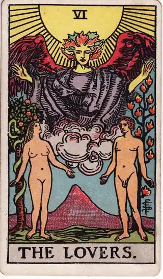
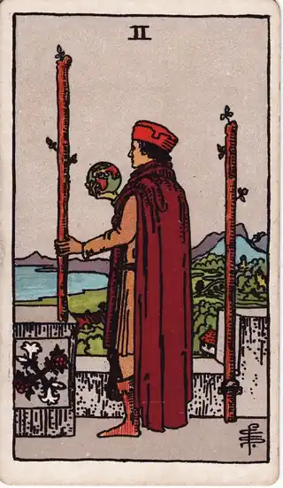
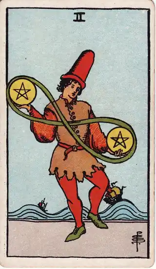

READING
How to think when you can't decide and are indecisive
· DECIDE. editors

Ten minutes just to decide a single lunch menu. You type one line of a reply, delete it, type it again, delete it again. Your plans for a day off end while you're still thinking about them. Each should be a small choice, so why is it this draining? And because even after deciding you drag it out with "I should have gone with the other one," you become unable to decide next time, too.
To say it up front: the goal of this page is not "to fix indecisiveness." The goal is to decide just one small choice today, without dragging it out. Practice in deciding doesn't need to start with a major life event. Lunch is fine, a reply is fine, plans for a day off are fine. Decide one thing, and finish without dragging it out. That feeling makes the next decision lighter.
And let me add one more thing about numbers. Ten minutes of being torn a day is about 60 hours a year. Try thinking of ¥980 (tax included) as the amount that buys back that time. The time spent continuing to be torn is, in itself, already expensive enough.
POINT 01 What's making this hard
Being unable to decide is not because your will is weak. Nor is it because you're not thinking. If anything, it's the opposite: you can't decide because you're overthinking. What's really behind it is usually one of the following three, or all of them.
One is fear of regret. From the moment you decide, "the side you didn't choose" starts to bother you. So before deciding, you end up imagining even the taste of the side you won't choose. Rather than choosing, you're counting what you'll lose first. How to live with regret after deciding itself is dealt with separately in How to choose without regret.
Another is the sheer number of options, and an endless loop of comparison. Compare, research, compare again. The more information grows, the more it feels like "it's still too early to decide." But deciding doesn't happen just because you compare more. The work of comparing itself has become a substitute for deciding.
And the third is that "your own feelings" and "the eyes and expectations around you" are mixed together. When you think about "what do I really want to do" and "what will people think of me" at the same time, both options look heavy. The longer someone stays torn, the more often they are putting their own feelings last.
POINT 02 How to sort it out
What to do now is to write just three lines. "What do I really want to do?" "What am I afraid of?" "Will it really be a problem if I don't decide today?" You don't need to try to decide. You write not in order to decide, but in order to separate the three things inside your head.
This writing goes more smoothly if you do it while drawing one card and gazing at it. You use the card you drew not to produce an answer, but as a mirror reflecting your current state. What is inside the words "I'm torn": is it fear, is it tiredness, or is it that you've actually already decided and just can't take the step? Once you can see your state, separating things into three lines gets faster.
If you leave what you wrote in a log, it works next time. "Last time I decided like this, and it turned out like this." A record of your own decisions shortens the time of the next decision you're torn over. Regret after deciding, too, can be verified by yourself if you have a log. Was it "I really did get it wrong," or "I was only anxious right after deciding"? What's really behind regret is something you can't know until time has passed. The more you can leave without a limit on the number of times, the more casually you can try, especially with small choices. As your log accumulates, your "own pattern of deciding" comes into view. That is the mechanism that lightens what you're torn over from here on.
POINT 03 How to read the cards
In the decision you're torn over when you can't decide, cards representing "balance," "choice," "looking out over," "scales," and "holding" are clues.

Two of Swords is the figure of one closing their eyes and balancing two swords. It reflects your current state itself, frozen, unable to lean either way. The reason you're frozen may not be a lack of decisiveness, but that you're listening seriously to what both sides have to say.

The Lovers is the figure of one standing before two paths. It's a card that depicts choice itself, and it asks not "which is correct," but "which feels more like me." It points to a perspective of stopping the search for the right answer, and looking by how well something suits you.

Two of Wands is the figure of one looking out over two paths from a high place. It represents stepping back one pace from immediate gains and losses, and comparing by the view a little further ahead. It makes you check whether your current decision you're torn over will still be a big problem for yourself a year from now.

Two of Pentacles is the figure of one juggling coins in both hands and keeping the scales. It's a card of everyday management, continuing to turn things even while swaying. It shows that moving forward while swaying, rather than in perfect balance, is also a form of decision.
The Hanged Man is the figure of one deliberately hanging upside down and changing perspective. It points to the option of not deciding right now, but holding and watching how things go. Holding is also a respectable form of decision, and deciding "not to decide" is also a decision.
POINT 04 Questions to ask yourself
Try answering the following questions. In one sentence, what do you really want to do? Is what you're afraid of choosing itself, or the side you didn't choose? If you don't decide today, what will really be a problem? Among the information you've compared so far, is what would be decisive already in place? If you drag it out after deciding, will that be dissatisfaction with the side you chose, or lingering attachment to the side you didn't choose? Last time you were torn in the same way, how did you decide, and how did it turn out?
Once your answers are in place, try deciding just one small choice today. Once you've decided, don't think about the side you didn't choose. That is what deciding for yourself means. You don't need to blame yourself for being unable to decide. Practice in deciding can start from today's small choice.
Cards related to this article
- Two of Swords: A card that reflects the state of being frozen before a two-way choice, in the figure of keeping balance without leaning either way.
- The Lovers: A card that asks, before two paths, "which feels more like me."
- Two of Wands: A card that points to a perspective of looking out over two paths from the view a little further ahead, and comparing over the long term.
- Two of Pentacles: A card representing everyday management, continuing to turn things even while swaying.
- The Hanged Man: A card that points to the option of deliberately holding, changing perspective, and watching how things go.
Related decision guides
Cards related to this article


More reading
- The types of free tarot readings and how they differ — where the "that feels spot-on" feeling comes from, and how to use them for a decision
- When you're torn over whether to keep going or quit. Standards for letting go of attachment
- Why I, who don't believe in fortune-telling, made tarot into a decision-making tool
- Why the more you ask for advice, the less you can decide, and how to get your own voice back
- When you're torn over whether to keep your current job. How to read a plateau in your career